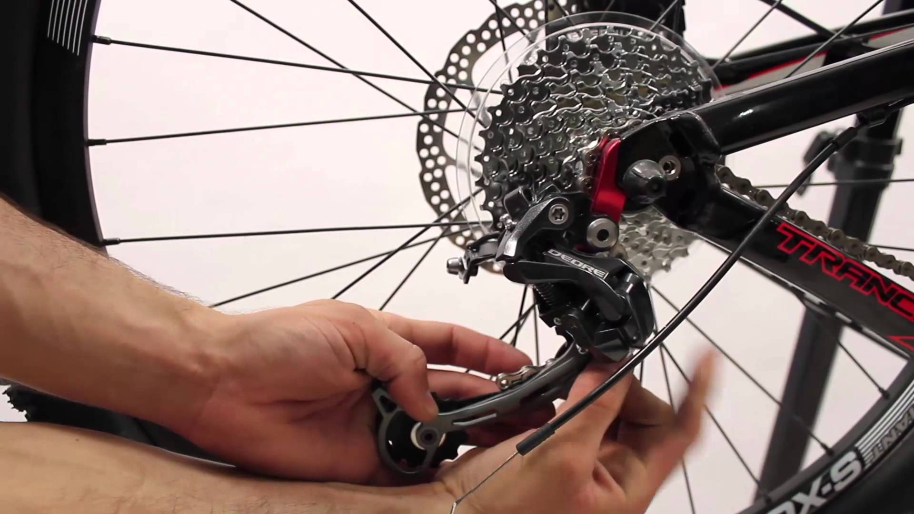

Comme pour le remontage de la roue avant, il est conseillé de
graisser légèrement le filetage de la roue (la partie rainurée qui va
être vissée avec l'écrou).
Remarque :Si malgré les freins enlevés vous n'arrivez toujours pas
à remettre la roue, dégonflez le pneu.
Placez la roue arrière dans la fourche arrière.
Insérez l’axe de la roue en commençant par le côté des pignons. Quand ils touchent
le dérailleur, replacez la chaîne sur le plus petit pignon et alignez le dérailleur
sur celui-ci.
Baissez le dérailleur jusqu'à ce que la roue soit en place.
Lâchez le dérailleur (en douceur) et vérifiez que la roue est bien centrée.

Serrez l’axe en serrant les écrous ou les molettes de serrage rapide.
Desserrez un tout petit peu les écrous pour éviter qu'ils se grippent.
Vérifiez la position de la chaîne par rapport aux pignons indiqués sur le guidon.
Resserrez les patins en replaçant le câble dans les mâchoires des freins et vérifiez qu'ils
ne touchent pas la roue.
Testez les freins
Remarque: pour les vélos dont les pignons ne sont pas fixés à la roue,
veillez à ne pas retirer complètement le tube de substitution : les pignons tomberaient
à terre (voir étape 1 : cas 2).